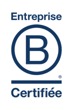
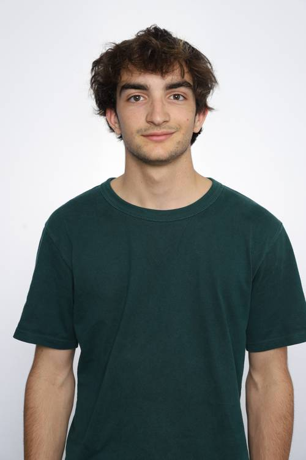
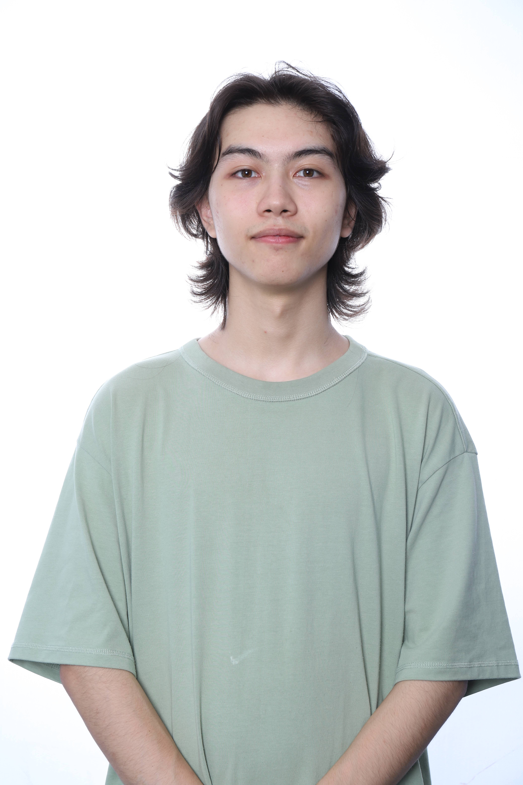
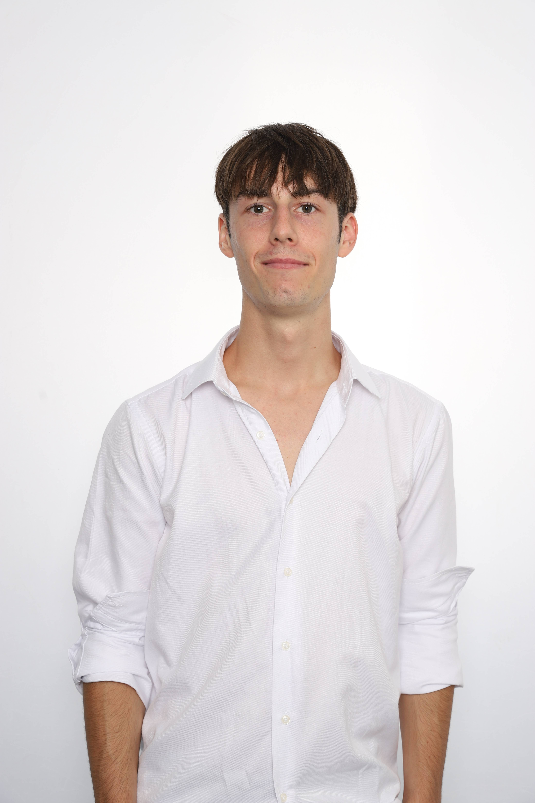
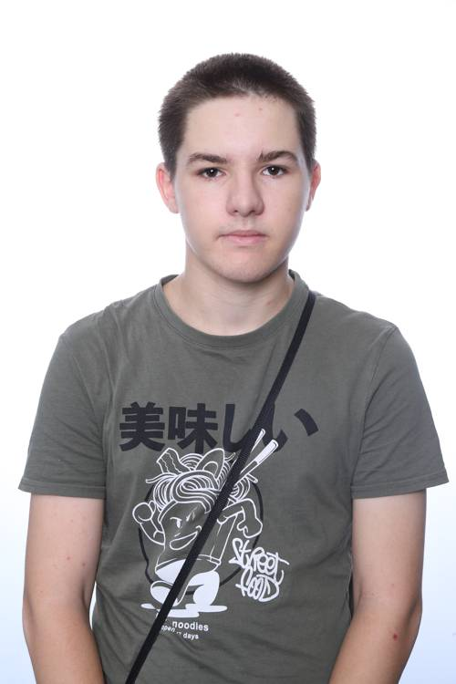
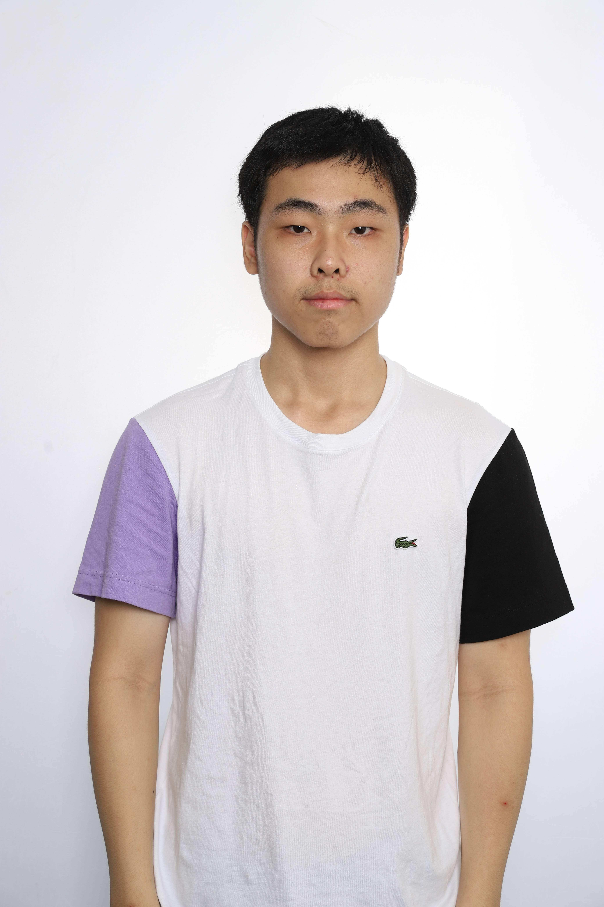

Isometric Digital est un petit studio de jeux vidéo français fondée en 2015. Basée à Paris, il se spécialise dans le développement de jeux indépendants au style artistique distinctif et à la jouabilitée immersive.
Ce studio a été créé par trois passionnés de jeux vidéo : Marie Leclerc, François Dubois et Thomas Lefevre. Tous trois partageaient une vision commune de créer des ludiques uniques.
Chez Isometric Digital, nous sommes plus qu'une simple entreprise, nos sommes. Nous collaborons avec nos clients, nos partenaires et nos employés pour repousser les limites de l'innovation tout en respectant notre engagement envers un avenir durable et équitable pour tous.
En tant qu'entreprise certifiée B Corp (B Corporation), nous nous engageons à façonner un avenir où nos bénéfices prospèrent tout en ayant un impact positif sur la société actuelle et sur l'environnement. Cette certification atteste du bien-être de nos employés et de notre engagement envers des normes élevées de responsabilité et de durabilité. |
 |
| Amaury PERRAUD |
Pierre-Yang TOURET |
Gaëtan SUILLEROT |
Cristiano PIRES |
Alexandre ZHOU--HU |
|---|---|---|---|---|
|  |  |  |  |  |
| "Je suis chef de projet. Je trouve particulièrement intéressant ce rôle de médiateur qui permet la cohésion d’une équipe tout au long du projet." | "Je souhaite donner le meilleur de moi-même afin d’obtenir, d’abord un bon résultat, mais aussi et surtout une expérience enrichissante." | "Le travail d’equipe que nous impose le projet est plus que bénéfique. Chacun apprend des autres et les échanges de connaissances sont essentiels et profite à tout le monde." | "Ce projet est important pour moi car il pourra me permettre d’apprendre à travailler en groupe et j’ai joué à plusieurs Rogue-Like, ce qui sera utile." | "Ce projet demandera beaucoup d’efforts, mais j’ai tout de même hâte d’y participer et de le réussir." |